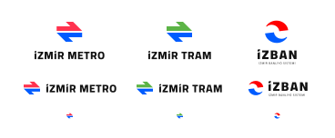

Şemadaki hatların şekli
Bir ulaşım şeması klasik bir harita değildir. Eğer gerçek rota coğrafyasını gösterseydi, merkezi bölgelerde çok yoğun olurdu ve kenarlarda neredeyse boş olurdu. Bu yüzden bir ulaşım şeması, yolcuların nasıl gideceklerine karar vermeleri için önemli olan simgeleri koruyan, bozulmuş bir coğrafya kullanır.
İşte ulaşım sisteminin bir coğrafi haritada nasıl göründüğü, şemada nasıl gösterildiğiyle karşılaştırıldığında.


Üçgen ızgara
60 derecelik üçgen ızgara, hatlarının gerçek coğrafyasıyla çok iyi uyum sağlar ve şemada yatay çizgilerin, durak etiketlerinin yerleştirilmesinde sorun yaratanları önlemeye izin verir. Tek istisna, Çiğli tramvay hattıdır, birkaç durakla birlikte yatay segmentlere sahiptir.
Aktarmalar
Yeni harita aktarmaları daha doğru bir şekilde gösterir. Tramvay ve İZBAN arasındaki aktarma olan Alaybey ve Karşıyaka, cadde üzerinde 10 dakikalık yürüyüş anlamına gelir veya daha da önemlisi, Mavişehir'de aktarma yapmak yaklaşık 15 dakikalık bir yürüyüş anlamına gelir, artık haritada tipik aktarmalar olarak işaretlenmemiştir. Bunun yerine, yolcuların başka bir istasyona ulaşmak için harcamaları gereken zamanı gösteren kesikli bir çizgiyle gösterilir. Benzer şekilde, Üçkuyular ve Alsancak'taki feribot aktarmaları temsil edilir.
Vapurlar
Vapur, İzmir'de yolcular için büyük bir zaman tasarrufu sağlayan önemli bir ulaşım biçimidir. Hızlı geçiş haritasında gösterilmemesi ciddi bir ihmaldir.
Vapur rotaları haritada iki tipe ayrılır: tüm gün hizmeti ve düzensiz. Tüm gün hizmeti, bu rotaların hafta içi ve hafta sonları boyunca tüm gün boyunca çalıştığı anlamına gelir. Bu tür rotalar kalın çizgilerle gösterilir. Düzensiz rotalar yalnızca hafta sonları çalışır veya günde en fazla 4 sefer yapar. Bu rotalar ince soluk çizgilerle gösterilir.

Renkler
Yeni şemada hatların renkleri genel olarak resmi şemanın renklerini devralır. İZBAN mavisidir, metro kırmızıdır ve tramvay hatları yeşildir. Çiğli tramvay hattının farklı yönlere resmi olarak işaretlenmiş iki rengi vardır, iç kısım mavi ve dış kısım kırmızıdır. İZBAN ve metro hatlarından ayırt edilebilmesi için haritada açık mavi ve açık kırmızı renklerle gösterilmiştir.
Tüm renk tonları renk körlüğü olan kişiler tarafından ayırt edilebilir olacak şekilde ayarlanmıştır.

Görünümler
Şema başlangıçta birkaç yıl içinde açılması planlanan Buca metro hattını göstermek üzere tasarlanmıştır. İnşa halindeki iki İZBAN istasyonu da özel işaretlerle gösterilmiştir.
Mavişehir İZBAN istasyonuna tramvay hattı ve Bornova'nın merkezindeki metro istasyonu için yer ayrılmış, ancak inşaatın başlama ve hatta bitiş koşullarının belirsizliği nedeniyle haritada gizlenmişti. Diğer metro ve tramvay hatlarının yeni hatları aynı nedenle gösterilmemiştir.

İZBAN
İZBAN sistemi, haritada temsil edilmesi gereken bir dizi özelliğe sahiptir.
İZBAN'ın yönlendirilmesi, Kuzey ve Güney yönlerine dayanmaktadır ve genel olarak gerçek yönlerle her zaman örtüşmez ve genel olarak yolcular için açık değildir. Yönler, insanların doğru yöne ulaşmasına yardımcı olmak için haritada çift oklarla gösterilir.
Her iki yönde de tek bir terminal istasyonu yoktur. Trenlerin yarısı rotayı son istasyonda değil, daha erken bitiriyor. Bu tür istasyonlar, hattaki son istasyonlar gibi daha büyük yazı tipiyle işaretlenmiştir. Bu, yolcuların haritadaki panoda gösterilen istasyonun adını bulmasını kolaylaştırır.
Hattın Tepeköy'den Selçuk'a kadar olan kısmı ayrı bir hat gibi çalışıyor. İzmir'den Selçuk'a veya tersi yönde gitmek için Tepeköy'de aktarma yapmanız gerekir. Bu segment, farklı bir renkte belirli bir çizgi olarak gösterilir. Transfer gerektirmeyen İZBAN'ın geri kalanı bazı resmi diyagramlardan farklı olarak tek renkte gösteriliyor.

Logolar
Şu anda metro, tramvay ve İZBAN logolarının etiketsiz çeşitleri olmadığı için küçük boyutlarda kötü görünüyor. Yeni harita için yeni logolar yapıldı. Tanınabilir olmak için orijinal simgelerin ana fikrini miras alıyorlar ancak yeni simgeler daha modern ve daha net bir forma sahip ve etiketsiz versiyonlara sahip.
Haritanın nasıl oluşturulduğu
Yazarlar

Evgeny Katyshev tarafından tasarlandı. İzmir'de bulunan EPAM'ın kullanıcı deneyimi tasarımcısı.
Ek katkıda bulunanlar:
- Ali Soyer, çevirmen
- Ali Soyer, ön uç geliştirici